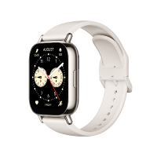
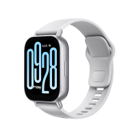
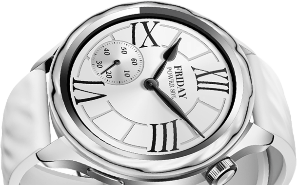

Where smart meets seamless XIO AMI
일상을 편리하게 WEARABLE




Xiaomi
프리미엄 성능, 당신을 위한 디자인.
WATCH S4
영상
Get The Highlights
뛰어난 밝기의 36.322mm AMOLED 디스플레이

눈부신 디스플레이
뛰어난 선명도
36.322mm AMOLED 대형 디스플레이를 적용해
선명하고 부드러운 비주얼과 함께 최대 1500nit의 압도적인 HBM 밝기를 선사합니다.
선명하고 부드러운 비주얼과 함께 최대 1500nit의 압도적인 HBM 밝기를 선사합니다.
*디스플레이 주사율은 인터페이스에 따라 다를 수 있습니다.
실제 사용 상황을 참조하세요.
*HBM 밝기는 전체 화면이 켜졌을 때의 최대 밝기입니다.
최고 밝기는 화면의 일부만 켜졌을 때 도달한 최고 밝기입니다.
실제 사용 상황을 참조하세요.
*HBM 밝기는 전체 화면이 켜졌을 때의 최대 밝기입니다.
최고 밝기는 화면의 일부만 켜졌을 때 도달한 최고 밝기입니다.
DESIGN
중앙에 한줄씩 등장 그냥 넣지 말까..? 교체 가능한 액세서리 완전히
맞춤 가능한 트렌디한 스타일 전통적인 시계에서 영감을 얻은 Xiaomi
워치 S4는 아이코닉하면서도 트렌디한 베젤을 다양하게 선보입니다.
고급 소재로 제작되는 이 교체 가능한 베젤은 독특하고 창의적인
디자인으로 시선을 사로잡습니다.
우측에 등장, 회색 *이미지의 일부 워치 페이스는 활성화하는데 특정 베젤 및 스트랩 키트가 필요하며 Mi Fitness 앱에서는 제공하지 않습니다. *실버, 블랙 또는 레인보우 베젤 및 스트랩 키트가 기본적으로 제공됩니다. 다른 베젤 및 스트랩 키트는 별도로 구매해야 합니다.
우측에 등장, 회색 *이미지의 일부 워치 페이스는 활성화하는데 특정 베젤 및 스트랩 키트가 필요하며 Mi Fitness 앱에서는 제공하지 않습니다. *실버, 블랙 또는 레인보우 베젤 및 스트랩 키트가 기본적으로 제공됩니다. 다른 베젤 및 스트랩 키트는 별도로 구매해야 합니다.
손목을 빛내는 트렌디한 스타일
xiomi Watch S4 Bezel and Strap Kit
듀얼 톤 세라믹(블루 그레이)정보.txt에 나머지정보잇음
투톤 블루 그레이 세라믹 베젤은 우아하면서도 세련된 스타일로
듀얼 GMT 시간대 디자인을 선보입니다.
듀얼 GMT 시간대 디자인을 선보입니다.
이동버튼
색상버튼
HEALTH & FITNESS
한눈에 확인하는 건강
고정밀 감지 모듈 24시간 연중무휴 건강 보호
고정밀 심박수 모니터링 모듈과 자체 개발한 심박수 알고리즘의 조합을 통해 워치의 심박수 모니터링 정확도를 98%*까지 높였습니다. *Xiaomi 내부 연구소에서 제공한 데이터입니다. 평균 정확도는 앉기, 실내 독서, 트레드밀 달리기, 야외 달리기, 걷기, 사이클 타기 등의 시나리오에서 최대 98%입니다. 실제 사용 시 정확도는 개인차, 사용 습관 및 환경 요인에 따라 달라질 수 있습니다.